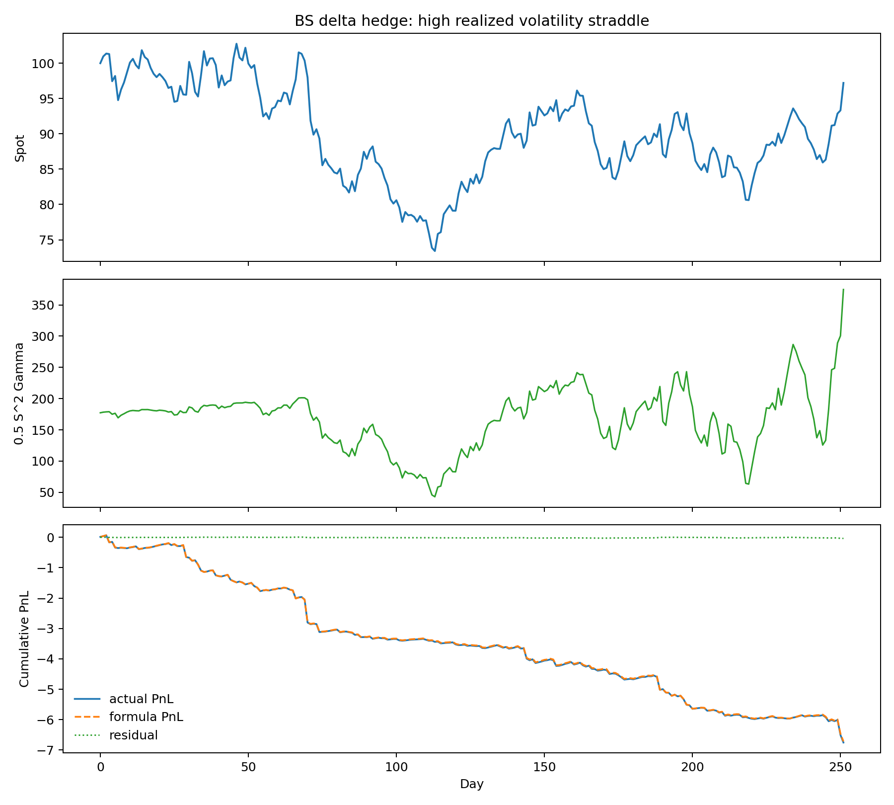
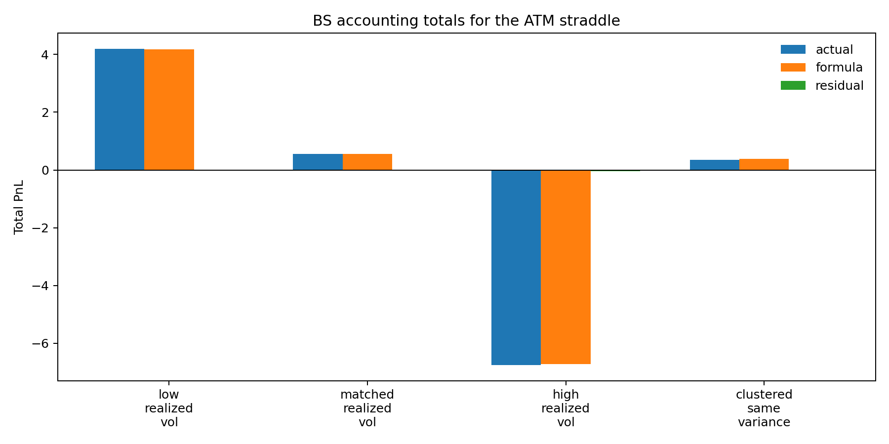
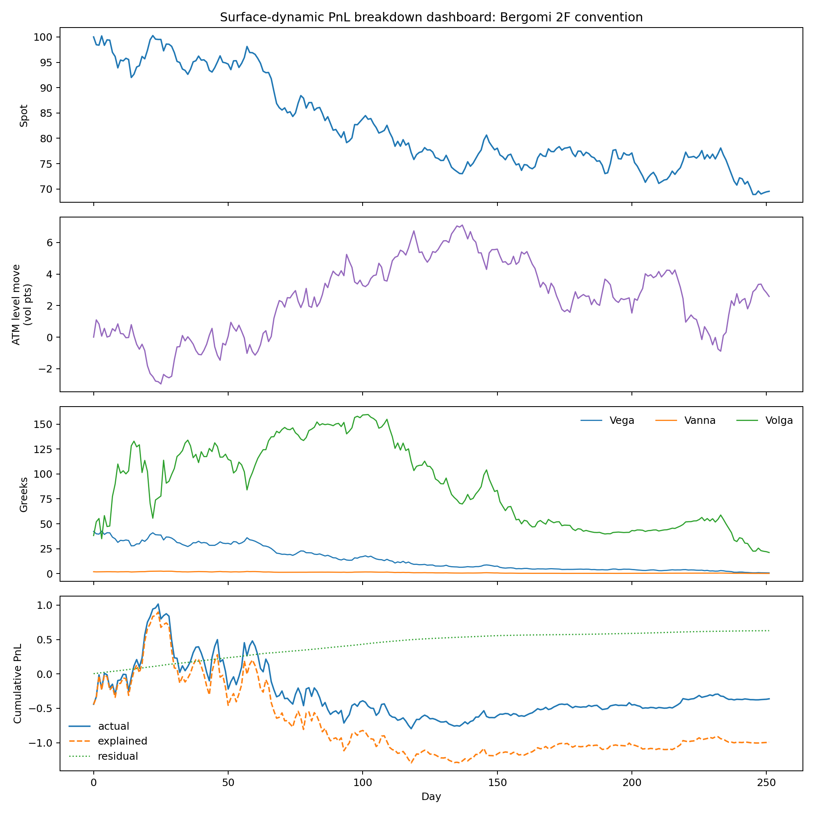
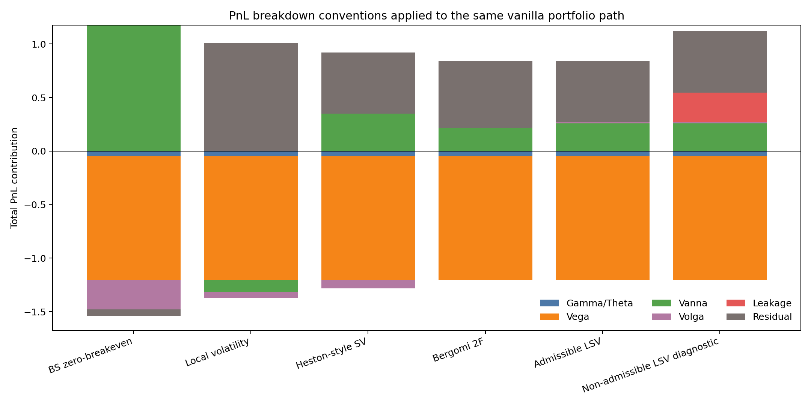
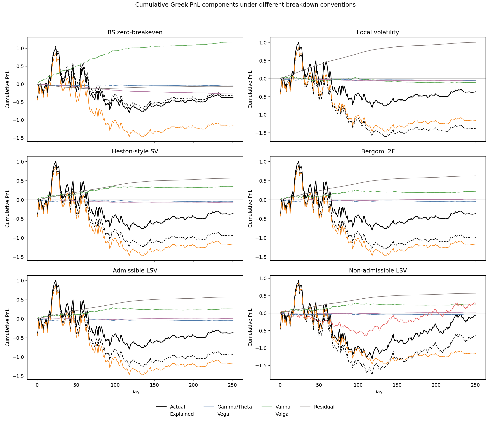
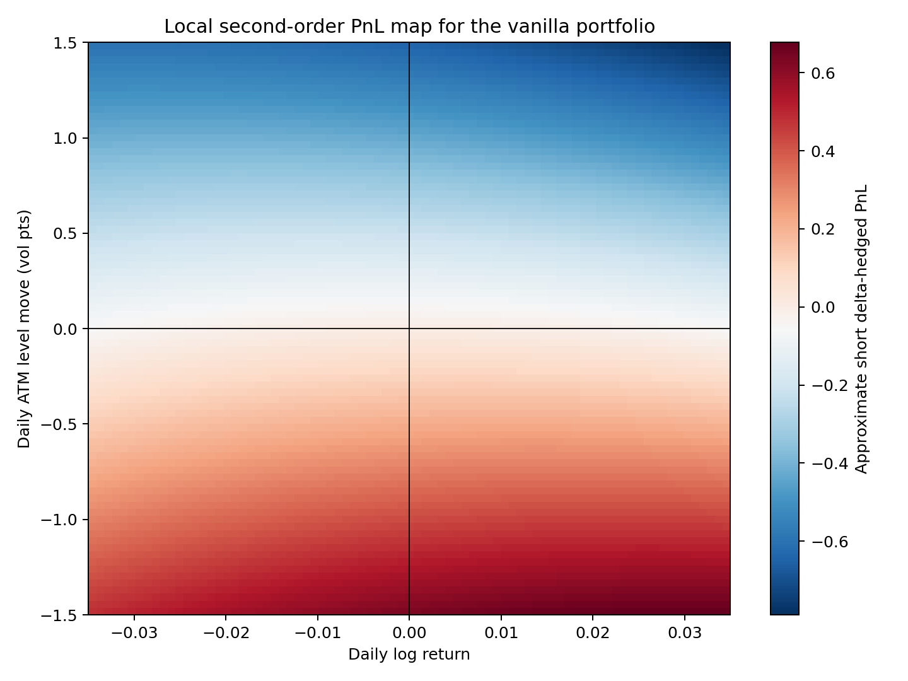
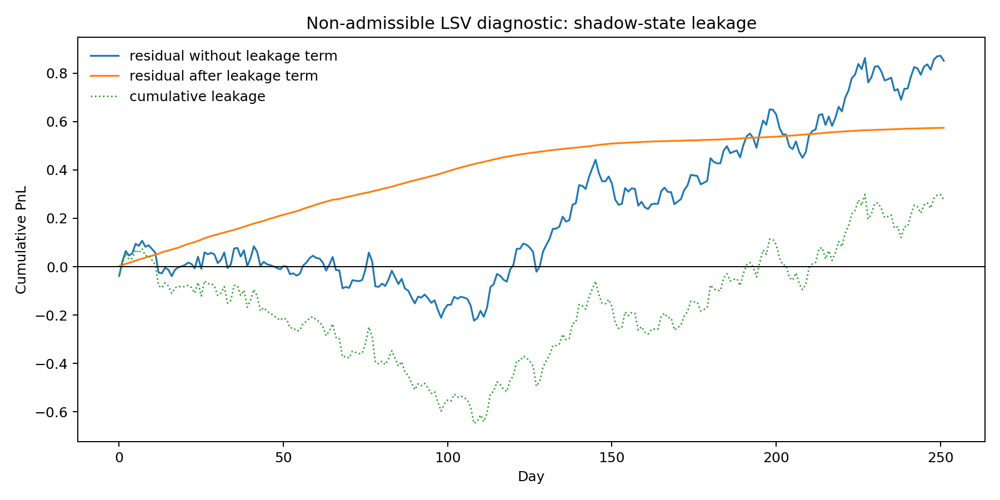
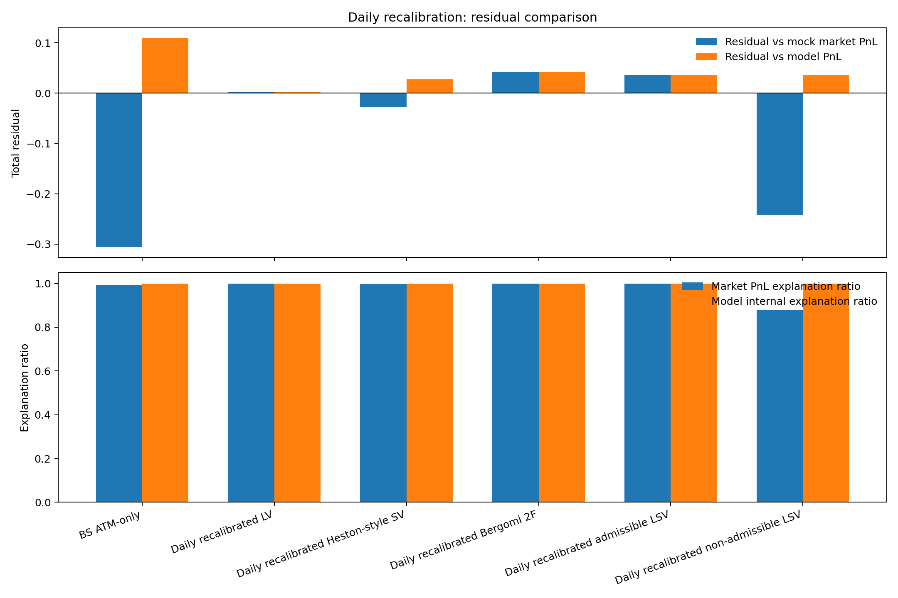
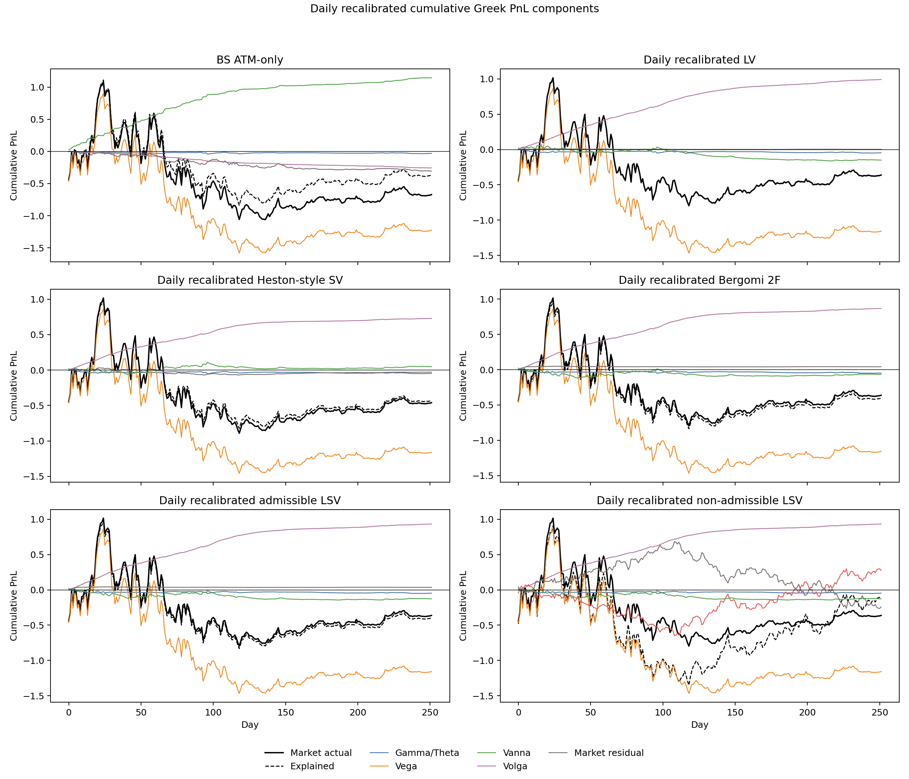

期权动态盈亏拆解（一）：基于香草期权的仿真实验
摘要
本实验用合成路径（mock data）检验 Bergomi 动态 PnL 归因框架的四个核心命题。第一，Black-Scholes（BS）Delta 对冲后，日度损益可由"半美元 Gamma 乘以实现方差与隐含方差之差"完整解释，四个路径场景下的日度解释率（accounting ）均超过 0.999。第二，当隐含波动率曲面出现日度变动时，损益分解需要引入 Vega、Vanna、Volga 三个曲面风险项；不同模型选用不同的盈亏平衡协方差（breakeven covariance），因此将同一条实现路径的损益分配到不同分项。第三，每日重校准价格、希腊值（Greeks）和盈亏平衡水平后，局部波动率（LV）、Bergomi 两因子（2F）和可容许局部随机波动率（admissible LSV）对外生 mock market 损益的累计残差分别降至 0.0023、0.0413、0.0358，低于 BS ATM-only 口径的 −0.3064。第四，若模型价格对不可交易的 shadow state 变量有敏感性，标准曲面风险分解中会出现不可解释的 leakage 损益；加入 leakage 项后，非可容许 LSV 的累计残差从 0.8511 降至 0.5740。
实验全部基于合成数据，目的是使 Bergomi 的 PnL 归因公式可视化，不构成真实市场的模型排序证据。
为何这套框架对期权交易员重要：PnL 归因不只是事后记账。 和 是模型在定价时隐含承诺的"公平协方差水平"——每天损益取决于实现协方差与这两个 breakeven 水平的偏差。交易员知道了 breakeven level，就能在收盘后立刻判断当日亏损来自哪类风险因子（Gamma、Vanna 还是 Volga），而不是把所有未解释部分归入噪声。更关键的是，选择模型就是选择 breakeven 水平：用 LV 定价 risk reversal，隐含的 与用 Bergomi 2F 定价差异显著；若实际 spot-vol 相关性与模型承诺不符，Vanna carry 会系统性地偏向一方。这套框架将模型选择与方向性风险暴露明确挂钩，是从纯定价工具迈向动态风险管理的核心一步。
1. 研究问题
本实验回答以下五个可验证的问题：
- 对平值（ATM）香草期权的日度 Delta 对冲持仓，Gamma/Theta 公式能否以 0.999 以上的 解释日度损益？不同路径场景（低实现波动率、匹配、高实现波动率、方差聚集）下该解释率是否稳健？
- 当隐含波动率曲面出现 ATM level 因子的随机游走时，Vega、Vanna、Volga 项相对于 Gamma/Theta 项的量级如何？
- LV、Heston-style 随机波动率（SV）、Bergomi 2F、admissible LSV 四类模型对同一条实现路径给出的盈亏平衡协方差有何差异？这种差异如何在 Vanna、Volga 分项上体现？
- 每日重校准价格、Greeks 和 Theta 配平的盈亏平衡水平，能否降低各模型口径相对外生 mock market 损益的累计残差？
- 非可容许 LSV 中，不可交易 shadow state 产生的 leakage 项量级有多大？将其纳入分解后残差如何变化？
2. 理论机制
2.1 Black-Scholes Delta 对冲的 Gamma/Theta 会计
设组合价格为 ，做空期权并用 份标的进行 Delta 对冲。根据 Black-Scholes P&L 推导，一个离散时间步长 内，Delta 对冲后的损益（PnL）为
其中 ，。
若模型给出的盈亏平衡方差（breakeven variance）为 ，则无套利定价要求 ，代入后得到
直觉：做空期权并 Delta 对冲后，若当日实现方差高于隐含方差预算 ，空 Gamma 头寸亏损；反之盈利。半美元 Gamma 决定每单位方差差额对应的损益权重，因此即使年度累计实现方差等于隐含方差，若 Gamma 较大时实现方差偏高、Gamma 较小时实现方差偏低，累计损益仍可不为零（方差聚集效应）。
脚本对应（run_experiments.py，run_bs_delta_experiment）：
| 报告符号 | CSV 列名 | 计算方式 |
|---|---|---|
actual_pnl |
BS 公式重估差值加 Delta 对冲头寸损益 | |
dollar_gamma_half |
BS Gamma 解析公式乘以 | |
formula_pnl |
上述封闭公式直接计算 | |
actual_pnl formula_pnl |
residual |
离散 Taylor 展开的高阶余项 |
解释率定义为
2.2 隐含波动率曲面动态与 Vega/Vanna/Volga 分解
当期权价格还依赖市场隐含波动率曲面时，Delta 对冲后额外留下曲面变动项。根据 隐含波动率变动的残余 P&L，对 ATM level 因子 （即脚本中的 ）做二阶展开，Delta 对冲后的总损益分解为
各分项定义为
这里 是现货/波动率协方差盈亏平衡水平， 是波动率方差盈亏平衡水平。不同模型对 和 的设定不同，这是各模型 PnL 归因口径的根本差异所在。
希腊值（Greeks）的有限差分计算（finite_diff_greeks，扰动步长 ， vol pt）：
Theta 用时间前向差分估计：，其中 。
实务含义：breakeven level 是模型对"公平协方差"的隐性承诺。 和 在定价时就被锁入期权价格；做市商卖出期权后，每天的 Vanna/Volga carry 就是这两个水平乘以对应 Greek 的乘积（ 和 ）。若实现的 spot-vol 协方差和 vol-of-vol 与 breakeven 一致，Vanna/Volga carry 恰好被 realized 冲击抵消，净损益为零。若出现系统性偏差，carry 就会持续累积成方向性盈亏。这意味着：
- 每日 PnL 归因：有了 breakeven，收盘后可立刻将损益拆成 Gamma surprise、Vanna surprise、Volga surprise 三部分，识别哪类风险因子当日产生超额损益。
- 对冲成本核算：用另一张期权对冲 Vanna 暴露时，对冲头寸本身每天有 Vanna carry；不计入该 carry 就会高估或低估对冲成本。
- 方向性交易：若交易员判断未来 realized 将比模型承诺的更负（现货大跌时波动率涨得更猛），则当前 Vanna 保费被低估，买入 risk reversal 是有利的方向性押注。
2.3 mock 曲面的参数化与路径生成
实验采用如下二次 smile 参数化（解析公式，非 Monte Carlo）：
曲面形状（skew 系数 ，curvature 系数 ）在整个实验中固定；随时间变化的部分仅有 ATM level 因子 、现货 和剩余期限 。刻意只让 随机变化，以便使 Vanna/Volga 分项的结构清晰可读；随机 skew 和随机 curvature 的扩展适合后续实验。
路径按如下离散方程生成（generate_surface_path）：
参数设定：、（年化）、；、。 是非可容许 LSV 诊断中使用的 shadow state，不进入标准曲面定价。全部路径使用固定随机种子 20260611。
该路径在 252 个交易日上的实现统计量为
这两个数字是后续模型盈亏平衡参数对比的基准（realized path statistics），不是市场数据。
2.4 各模型的盈亏平衡口径
各模型对 的设定来自 build_kernels 函数，固定口径实验中不随时间更新：
| 模型 | leakage sensitivity | 含义 | ||
|---|---|---|---|---|
| BS zero-breakeven | 无曲面动态盈亏平衡，Vanna/Volga 项全部进入残差 | |||
| Local volatility（LV） | 盈亏平衡水平由初始 smile 斜率锁定 | |||
| Heston-style SV | 单随机方差因子，vol-of-vol 盈亏平衡较低 | |||
| Bergomi 2F | 双前向方差因子，接近本路径 realized 统计量 | |||
| Admissible LSV | 局部 smile 加可容许随机波动率，无 leakage | |||
| Non-admissible LSV（诊断） | 同上，但加入 shadow state leakage 诊断项 |
局部波动率模型的盈亏分解口径对应 SSR 与 Vanna/Volga 盈亏平衡 中的分析：LV 将 Vanna/Volga 盈亏平衡水平锁定在当前微笑斜率；SV/Bergomi 2F/LSV 通过额外动态参数（前向方差因子、随机方差因子）设定这些水平。
实务含义：选择模型就是隐性地押注 spot-vol 协方差和 vol-of-vol 的水平。以 LV 与 Bergomi 2F 对同一张 risk reversal 报价为例：LV 的 比 Bergomi 2F 的 绝对值更大，意味着 LV 认为现货下跌时波动率上升得更剧烈，因此将 Vanna 保费定得更高；若实际 spot-vol 相关性更接近 ，则使用 LV 的做市商每天在 Vanna carry 上系统性亏损。这一逻辑在风控层面的含义是：不同模型给出的 Vanna/Volga 敞口数字不可直接相加——同一本组合用 LV 计量的 Vanna notional 可能与用 Bergomi 2F 计量的方向相反（实验表 2 中 LV 的 Vanna 分项为 ，Bergomi 2F 为 ），因此跨模型对冲会产生方向性错误。台账和风控限额需要明确指定使用哪个模型的 breakeven 口径，且该口径应与对冲交易使用的定价模型保持一致。
2.5 每日重校准与 Theta 配平
每日重校准实验要求每个交易日按当日 重新计算模型价格、Greeks 和盈亏平衡水平（daily_recalibrated_breakevens 函数）。各模型的 采用历史滚动估计与固定先验的混合：
- LV：（随 ATM level 调整的 smile-slope 公式）
- Heston-style SV：（历史估计与固定先验混合）
- Bergomi 2F：
- Admissible / non-admissible LSV：
其中 是过去 40 个交易日 的滚动年化均值。
在设定 之后，脚本用 Theta 配平方程反推 。连续时间下，若当天不发生随机冲击，Theta 应与二阶盈亏平衡项抵消：
由此反推（theta_consistent_volvol_breakeven 函数）：
脚本将 限制在 ，以避免 Volga 极小时的数值不稳定。这是一个教学性近似，对应 模型可用性条件 的基本思想，但尚未替代完整 LV/SV/LSV 定价 PDE 的求解。
每日重校准实验同时输出两类残差：
前者检验模型内部 PnL 分解的闭合程度（accounting consistency），后者检验该模型口径能否解释外生 mock market 曲面的重估损益（market explanatory power）。
本节设计的关键限制：theta_consistent_volvol_breakeven 反解出的 满足的是一个代数条件——若当天 、，则 PnL 分解精确闭合。但实际交易日必然有随机冲击，当天的 Volga surprise 为
是当天的实现值，与 的期望是否匹配取决于路径，并不由代数反解保证。因此 并不能使每日 residual 为零；它的作用是确保"若期望实现，则 Theta decay 被准确计入"，即消除 Theta 的系统性偏差，而非消除随机 surprise。
实务中更完整的做法应是：每天用新的香草波动率曲面 重新拟合模型参数 （对 LV 是 Dupire 局部波动率面，对 Bergomi 2F 是前向方差相关矩阵和 vol-of-vol 参数），再从 中内生导出 和 ：
- Bergomi 2F 中：（前向方差与现货的协方差积分）， 由前向方差的自协方差结构决定，两者均从当日校准的参数中计算，不依赖 Theta 方程。
- LV 中： 由当日 smile 斜率（SSR）与现货波动率的乘积给出，随曲面变化自动更新。
这种做法下，残差中包含三类真实的模型风险：（1）参数漂移风险——，今天的校准参数明天已过时；（2）模型误设风险——即使每天重校准，若模型函数形式与真实曲面动态不符，Greeks 和 breakeven 仍会系统性偏差；（3）对冲频率风险——用 时刻 Greeks 对冲， 时刻曲面变化已超出线性近似范围。本实验的 theta_consistent 近似绕过了完整 PDE 校准，因此实验结果低估了真实重校准过程中的模型风险：LV 的 market residual 0.0023 在真实市场中会因参数漂移和模型误设而显著更大。
2.6 LSV 的 leakage 机制
根据 LSV P&L 完整拆解，若模型价格 对不可交易状态变量 有非零敏感性，Delta/Vega 对冲后会留下额外项：
脚本中的简化版（leakage_pnl，leakage sensitivity 固定为 5.0）：
leakage_pnl = -leakage_sensitivity * d_lam \
- 0.5 * leakage_sensitivity * (d_lam**2 - leakage_var_be * DT)
可容许性条件要求 （见 可用性条件与可容许类）；若该条件不满足，标准曲面分解无法吸收 对路径损益的贡献。
3. 实验设计
运行方式：在项目文件夹下执行 python run_experiments.py，固定随机种子 20260611。
3.1 实验一：Black-Scholes Delta 对冲基准
目的：验证 Gamma/Theta 公式对日度损益的解释能力，并隔离实现方差与隐含方差的差异、方差聚集效应。
| 设定项 | 值 |
|---|---|
| 产品 | ATM 看涨、ATM 看跌、ATM 跨式（straddle） |
| 现货初值 | 100 |
| 初始期限 | 1.25 年；实验窗口 252 个交易日，避开到期 kink |
| 隐含波动率 | 20%（固定） |
| 路径场景 | 见下表 |
| 场景 | 年化实现波动率 | 路径生成方式 |
|---|---|---|
| 低实现波动率 | 15% | 标准正态日收益缩放至 15% 年化 |
| 匹配实现波动率 | 20% | 标准正态日收益缩放至 20% 年化 |
| 高实现波动率 | 28% | 标准正态日收益缩放至 28% 年化 |
| 方差聚集 | 20%（总量） | 前 时间日收益乘以 1.8，后 乘以 0.6，再整体缩放回 20% |
操作序列：生成 路径 → 逐日用 BS 公式计算 → 计算 actual_pnl 和 formula_pnl → 计算日度 。
检验假设：若 ，则 Gamma/Theta 公式在离散日度对冲下成立。方差聚集场景检验：即使年化实现方差与隐含方差相等，Gamma 权重路径分布不同时，累计损益是否不同。
3.2 实验二：曲面动态香草组合
目的：将单因子 ATM level 变动引入后，量化 Vega、Vanna、Volga 相对 Gamma/Theta 的量级和时序特征。
香草组合构成（见 PORTFOLIO，设计上同时暴露于 Vega、Vanna、Volga）：
| 腿 | 类型 | 行权价 | 期限 | 权重 |
|---|---|---|---|---|
| 1Y 110 看涨 | call | 110 | 1.0Y | |
| 1Y 90 看跌（空） | put | 90 | 1.0Y | |
| 1Y 90 看跌（多） | put | 90 | 1.0Y | |
| 1Y 110 看涨（多） | call | 110 | 1.0Y | |
| 18M ATM 看涨 | call | 100 | 1.5Y | |
| 6M ATM 看涨（空） | call | 100 | 0.5Y |
操作序列：用 mock smile 公式逐日对每条腿定价并加权求和（封闭 BS 公式，无 Monte Carlo）→ 有限差分估计组合 Delta、Gamma、Vega、Vanna、Volga → 计算各分项解释 PnL → 对比六种盈亏分解口径的残差。
检验假设：同一条 realized path 下，BS zero-breakeven 口径的残差最大；盈亏平衡水平越接近 realized 统计量（），残差越小。
3.3 实验三：固定盈亏平衡口径的模型对比
使用与实验二相同的 路径，仅改变 ，对比六种模型口径（参数见 2.4 节表格）下 Vanna、Volga 分项的差异及各自累计残差。
检验假设：Vega 项由实际 决定，各模型相同；Vanna、Volga 项随 、 变化；non-admissible LSV 在标准分解外多出 leakage 项。
3.4 实验四：每日重校准型盈亏分解
在实验三的基础上，每个交易日按当日 重新计算各模型的价格、Greeks 和 Theta 配平后的盈亏平衡水平（详见 2.5 节），然后对比各模型的 market residual 和 model residual。
检验假设：每日重校准后，LV/Bergomi 2F/admissible LSV 相对 mock market PnL 的累计残差应低于 BS ATM-only 口径。non-admissible LSV 的 model residual 很小（因为模型自身 PnL 已包含 leakage），但 market residual 较大（因为 mock market PnL 不含 leakage）。
实验设计的代入近似与局限：本实验中， 由 Theta 配平方程反解，而非从模型参数校准中内生导出。这一近似使 与当日 Greeks 结构代数上匹配，因而 Theta decay 被精确分配，残差中仅剩随机 surprise 项。实务中更合适的流程是：每天用新的隐含波动率曲面重新拟合模型参数（LV 拟合 Dupire 局部波动率面，Bergomi 2F 拟合前向方差相关矩阵和 vol-of-vol），再从校准参数中内生计算 、，用于当天的 PnL 分解。这样导出的 breakeven 不保证 Theta 代数平衡，残差中会额外包含三类模型风险：参数在相邻两天之间的漂移（再校准风险）、模型函数形式与真实曲面动态的不匹配（模型误设风险）、以及用昨日 Greeks 对冲今日曲面变化的近似误差（对冲频率风险）。本实验因使用 Theta 配平近似，system atically 压低了这三类风险在残差中的体现，结果中的低 residual 数字（如 LV market residual 0.0023）不能直接外推至真实市场环境。
4. 实验结果
4.1 实验一：Gamma/Theta 公式检验
表 1 展示 ATM 跨式在四个路径场景下的期末累计损益。actual_pnl 由 BS 公式重估差值加 Delta 对冲头寸损益计算；formula_pnl 由封闭 Gamma/Theta 公式计算；residual 为两者差值，量级对应离散 Taylor 展开的高阶余项； 由日度截面方差计算。
| 场景 | 年化实现波动率 | actual | formula | residual | |
|---|---|---|---|---|---|
| 低实现波动率 | 15% | 4.1892 | 4.1767 | 0.0126 | 0.9995 |
| 匹配实现波动率 | 20% | 0.5533 | 0.5560 | −0.0026 | 0.9995 |
| 高实现波动率 | 28% | −6.7530 | −6.7153 | −0.0377 | 0.9992 |
| 方差聚集 | 20%（总量） | 0.3542 | 0.3796 | −0.0255 | 0.9992 |
四个场景的 均超过 0.999，验证了第一个研究假设。
图 1（bs_delta_accounting_dashboard.png）回答的问题：高实现波动率场景下，Gamma/Theta 公式是否逐日累积地跟踪实际损益？三个子图分别展示现货路径（说明日收益来源）、半美元 Gamma （说明每日方差差额的权重）、累计 actual/formula/residual（检验公式能否逐步闭合）。

图 2（bs_delta_summary_bars.png）回答的问题：四个场景下，做空跨式的累计损益方向和量级是否与"实现方差 vs 隐含方差"的预期一致？低实现波动率场景中空跨式盈利 4.1892，高实现波动率场景亏损 −6.7530，方向符合预期。匹配场景的累计损益为 0.5533 而非零，原因是 Gamma 对当日 的权重随路径变化：全年实现方差与隐含方差相等，并不保证 Gamma 加权后的累计损益为零。方差聚集场景与匹配场景的年度实现方差相同，但前者累计损益为 0.3542，后者为 0.5533，差异来源于 Gamma 较大的早期时段集中了更多实现方差。

4.2 实验二/三：曲面动态 PnL 分项与模型口径对比
图 3（surface_accounting_dashboard_bergomi2f.png）回答的问题：在 Bergomi 2F 盈亏平衡口径下，各分项加总是否能跟踪实际重估损益？四个子图依次为现货路径、ATM level 因子 （两条路径共同决定实际重估损益）、组合 Vega/Vanna/Volga 时序（确认该组合同时暴露于三类曲面风险）、累计 actual/explained/residual（检验分项加总效果）。

表 2 展示六种盈亏分解口径对同一条路径的期末分项加总。各列由 surface_accounting_summary.csv 汇总；actual 由封闭 BS 公式重估加 Delta 对冲头寸计算，Gamma/Theta 等各分项由 2.2 节公式（有限差分 Greeks + 盈亏平衡水平参数）计算，explained = 各分项之和，residual = actual − explained。
| 模型 | actual | Gamma/Theta | Vega | Vanna | Volga | Leakage | explained | residual |
|---|---|---|---|---|---|---|---|---|
| BS zero-breakeven | −0.3618 | −0.0471 | −1.1573 | 1.1755 | −0.2726 | 0.0000 | −0.3015 | −0.0603 |
| Local volatility | −0.3618 | −0.0471 | −1.1573 | −0.1085 | −0.0594 | 0.0000 | −1.3723 | 1.0105 |
| Heston-style SV | −0.3618 | −0.0471 | −1.1573 | 0.3501 | −0.0768 | 0.0000 | −0.9312 | 0.5693 |
| Bergomi 2F | −0.3618 | −0.0471 | −1.1573 | 0.2125 | 0.0015 | 0.0000 | −0.9904 | 0.6286 |
| Admissible LSV | −0.3618 | −0.0471 | −1.1573 | 0.2584 | 0.0102 | 0.0000 | −0.9359 | 0.5740 |
| Non-admissible LSV | −0.0847 | −0.0471 | −1.1573 | 0.2584 | 0.0102 | 0.2771 | −0.6587 | 0.5740 |
表中 Vega 项（−1.1573）在所有模型中相同，因为它直接由实际 序列决定（），与盈亏平衡水平无关。Vanna 项随 变化最为显著：BS zero-breakeven 中为 +1.1755（因 ，realized spot-vol covariance −0.0116 全部进入残差前先体现在该项），LV 中切换为 −0.1085（ 偏离 realized −0.0116 较多，导致 Vanna 项反号且量级缩小，残差反而更大）。Bergomi 2F 和 Admissible LSV 的 接近 realized 值 0.0061，因此 Volga 项接近零。Non-admissible LSV 的 actual 与其他模型不同（−0.0847 vs −0.3618），因为该模型的实际损益中包含了 shadow state leakage 项 0.2771。
图 4（model_accounting_waterfall.png）回答的问题：六种口径如何把同一条路径损益在分项之间重新分配？每根堆叠柱显示各分项之和（explained PnL）加上残差等于 actual PnL。

实务启示（模型口径差异）：表 2 中 LV 的残差（+1.0105）反而大于 BS zero-breakeven（−0.0603），直觉上令人意外——LV 明明有非零 breakeven，为何解释效果更差？原因在于 LV 的 比 realized 值 −0.0116 偏负更多，导致 Vanna 分项从 BS 口径的 +1.1755 直接翻转为 −0.1085，过度纠偏反而把残差推大。这揭示了一个实务规律：breakeven level 与 realized 统计量的偏差方向比其绝对大小更关键——方向设反的 breakeven 不如不设。对做市商而言，这意味着在用 LV 报价 risk reversal 时，若市场的实际 spot-vol 相关性长期没有 LV 预期的那么负，Vanna carry 就会系统性地偏向亏损，且这一亏损不会出现在 delta/vega 日报中，只在 PnL 归因中可见。
图 5（greek_pnl_components_by_model.png）回答的问题：哪个分项在哪些时段主导累计损益？六个子图分别对应六种口径；黑色实线是 actual，黑色虚线是 explained，其余彩色线是各 Greek 分项的累计时序。Vega 线在各子图中重合；Vanna 和 Volga 的累计路径在各子图间不同，展示了盈亏平衡水平差异的时序效应。

4.3 局部二阶 PnL 核密度热图
图 6（daily_pnl_kernel_heatmap.png）回答的问题：在同样的现货跌幅下，为什么波动率同步上升与下降会产生不同损益？
图中横轴为日对数收益 ，纵轴为 ATM level 变化 （单位：vol pt），颜色表示用 2.2 节公式（Bergomi 2F 盈亏平衡参数）在初始状态 处计算的局部近似损益。热图在初始状态 、 处用封闭公式（非 Monte Carlo）计算，不随日期更新。横轴方向的弓形弯曲来自 Gamma；纵轴方向的线性斜率来自 Vega；斜向倾斜（左下/右上象限与左上/右下象限的不对称）来自 Vanna ；纵轴方向的轻微弯曲来自 Volga。

4.4 LSV leakage 诊断
图 7（lsv_leakage_diagnostic.png）回答的问题：不可交易 shadow state 对路径损益的贡献有多大，纳入后残差如何变化？
图中蓝线是仅使用标准 Gamma/Theta、Vega、Vanna、Volga 分解时的累计残差（cumulative_standard_residual），橙线是加入 leakage 项后的累计残差（cumulative_residual），虚线是累计 leakage 损益（cumulative_leakage_pnl）。
期末数值：标准残差 0.8511，加入 leakage 项后残差 0.5740，leakage 累计贡献 0.2771。残差从 0.8511 降至 0.5740 说明 shadow state 的确携带部分路径损益，但仍有 0.5740 无法被这个简化 leakage 公式解释，原因在于 leakage sensitivity 参数（5.0）是外生给定的教学设定，而非从完整 LSV 定价模型中校准得到。

实务含义（奇异期权的 leakage 风险）：对于障碍期权和雪球等路径依赖产品，模型价格通常对内部状态变量（如局部波动率因子、随机方差因子的当前值）有更强的敏感性， 不为零的情形更为普遍。此时若用标准 Delta/Vega 对冲，每天会有一笔无法对冲的 leakage PnL 留在账上——接近障碍时 可能急剧放大，使 leakage 项比 Vanna/Volga 项更大。实务上的应对方式有两类：一是要求模型满足可容许性条件（调整 LSV 混合权重使 ），从定价端消除 leakage；二是将 leakage 纳入 PnL 归因监控，把其累计趋势作为模型可用性的预警信号——若 leakage 项持续单向累积，说明模型对不可交易风险的敞口已超出可接受范围。
4.5 实验四：每日重校准后的残差对比
表 3 展示每日重校准实验的期末汇总。mock market actual 由外生 mock market 曲面（portfolio_value 函数，与模型无关）逐日重估得到；explained 由各模型每日重算的 Greeks 和 Theta 配平盈亏平衡水平代入 2.2 节公式计算；market residual = mock market actual − explained；model residual = 各模型自身重估 PnL − explained；两类解释率均采用 计算。
| 模型 | mock market actual | explained | market residual | market | model residual | model |
|---|---|---|---|---|---|---|
| BS ATM-only | −0.6717 | −0.3653 | −0.3064 | 0.9914 | 0.1090 | 0.9999 |
| Daily recal. LV | −0.3618 | −0.3641 | 0.0023 | 1.0000 | 0.0023 | 1.0000 |
| Daily recal. Heston SV | −0.4601 | −0.4319 | −0.0282 | 0.9981 | 0.0271 | 0.9999 |
| Daily recal. Bergomi 2F | −0.3618 | −0.4031 | 0.0413 | 0.9998 | 0.0413 | 0.9998 |
| Daily recal. admissible LSV | −0.3618 | −0.3976 | 0.0358 | 0.9999 | 0.0358 | 0.9999 |
| Daily recal. non-admissible LSV | −0.3618 | −0.1203 | −0.2415 | 0.8803 | 0.0358 | 0.9999 |
BS ATM-only 对 mock market PnL 的 market residual 为 −0.3064，因为它的定价只使用 ATM 隐含波动率（model_smile_vol 中 black_scholes 分支返回 atm 而无 skew/curvature），无法跟踪含 skew/curvature 的 mock market 曲面重估损益。LV、Bergomi 2F、admissible LSV 的 market residual 分别为 0.0023、0.0413、0.0358，均显著小于 −0.3064，支持第四个研究假设。
Non-admissible LSV 的 model residual 仅为 0.0358（与 admissible LSV 相同），但 market residual 达到 −0.2415。原因是该模型自身 PnL（model_actual_pnl）包含 shadow state leakage 贡献，而 mock market PnL 不含 leakage；因此模型内部分解闭合，但与外生市场损益的口径不一致。这正是 可用性条件 所述的核心问题：非可容许模型在对冲后仍会暴露于不可交易风险。
图 8（daily_recalibration_residual_comparison.png）回答的问题：每日重校准后，各模型的 market residual 和 model residual 相对 BS ATM-only 如何变化？上图为期末累计残差的柱状对比（蓝：market residual，橙：model residual），下图为对应解释率。

图 9（daily_recalibrated_greek_pnl_components.png）回答的问题：每日重校准后，各分项的累计路径能否跟踪 mock market actual PnL？六个子图与图 5 结构相同，但 Greeks 和盈亏平衡水平每日更新。LV、Bergomi 2F、admissible LSV 的 explained 曲线（黑虚线）紧贴 market actual 曲线（黑实线），说明每日重算 Greeks 与 Theta-consistent breakeven 后分项加总有效。Non-admissible LSV 的 market residual 线（灰）随时间累积，直观展示 leakage 带来的口径偏离。

对实验结果的正确解读：低 residual 源于代数近似，而非模型精度。LV 的 market residual 仅为 0.0023，在数字上接近完美，但这一结果需要审慎解读。脚本中 是从 Theta 方程反解得到的——它的构造方式保证了在当日 Greeks 结构下 Theta 恰好被吸收，使"无冲击时"残差精确为零；加上本实验的 mock 曲面只有 ATM level 单一随机因子，每日 realized 序列较为平稳，Volga surprise 不大，因此累计 residual 极小。
真实市场重校准过程中， 和 从每日校准的模型参数 中内生导出，不存在 Theta 代数平衡的保证。此时残差来自三个相互独立的来源：
| 来源 | 机制 | 在本实验中的体现 |
|---|---|---|
| 参数漂移（再校准）风险 | ，昨日参数导出的 breakeven 在今日已过时 | 被 Theta 配平近似消除 |
| 模型误设风险 | 模型函数形式与真实曲面动态不符，Greeks 系统性偏差 | 被 mock 曲面的单因子结构简化掉 |
| 对冲频率风险 | 日度对冲遗漏了日内曲面变化的高阶项 | 仅体现为离散 Taylor 余项，量级小 |
因此，本实验展示的是"Theta 配平近似在单因子 mock 曲面上的代数闭合性"，而非 LV 在真实市场中优于其他模型的证据。后续若将实验升级为真实曲面上的完整参数校准循环，上表三类风险的量级将成为模型可用性评估的主要指标。
结论一（Gamma/Theta 公式）：在 mock data 环境中，ATM 跨式日度 Delta 对冲损益可由 Gamma/Theta 公式以 的精度解释。方差聚集路径说明，年度累计实现方差等于隐含方差并不保证累计损益为零，Gamma 对实现方差的时间加权决定最终结果。
结论二（盈亏分解口径的核心是盈亏平衡协方差）：六种模型对同一条路径损益的归因差异几乎全部来自 和 的设定。Vega 项与模型选择无关；Vanna 和 Volga 项随盈亏平衡水平变化，并不随之单调减小——LV 的 偏离 realized covariance 较多，反而产生更大的残差。
结论三（每日重校准的作用）：每日同步更新价格、Greeks 和 Theta-consistent breakeven 后，LV、Bergomi 2F、admissible LSV 的 market residual 均低于 BS ATM-only，支持 Bergomi 模型可用性框架的基本观点：模型需要同时给出初始定价和动态损益的盈亏平衡水平。这个结论在本实验中是在轻量 mock-data 近似下得到的，Theta-consistent breakeven 尚未替代完整 LV/SV/LSV PDE 的求解。
结论四（LSV 可容许性）：非可容许 LSV 的 model residual 与 admissible LSV 相同，但 market residual 显著更大。这说明可容许性不影响模型内部 PnL 分解的闭合程度，但影响模型损益与外生市场损益之间的口径一致性。加入 leakage 项后残差从 0.8511 降至 0.5740，但仍有较大残余，因为本实验的 leakage sensitivity 是外生设定，而非从完整模型校准。
结论五（实务意义总结）：PnL 归因框架的价值不限于事后记账，它将模型选择与日常风险管理直接挂钩，体现在以下三个层面：
风控层面：标准 delta/vega 报告无法区分"Vanna carry 系统性亏损"与"随机波动噪声"。有了 breakeven 口径后，Vanna 和 Volga 分项的累计时序会显示出方向性漂移，成为模型假设与实际市场动态是否匹配的监控信号。风控限额也需要指定 breakeven 口径——同一本组合在 LV 和 Bergomi 2F 口径下的 Vanna notional 可能方向相反，跨口径混用会产生虚假的对冲效果。
交易层面：模型选择隐性地设定了 和 的"公平水平"；若交易员对未来 realized 统计量有独立判断，与模型 breakeven 的偏差就是方向性交易的依据。做多/做空 risk reversal、butterfly 本质上是对 、 的押注，PnL 归因框架使这类押注的盈亏来源可量化。
奇异期权发行层面：障碍期权和雪球的 和 在特定路径（接近障碍、接近赎回条件）下远大于 vanilla；breakeven 水平每偏差 0.001，对应的日度 Vanna/Volga PnL 误差被放大相应倍数。因此发行定价时需对 、 做压力测试，并确保日常 PnL 归因能捕捉到接近事件窗口时的分项放大——这是从定价模型到可运营风险管理体系的关键一步。
实验局限：所有路径和参数均为合成数据；mock 曲面仅有 ATM level 因子随机化，未加入随机 skew 或随机 curvature；Theta-consistent breakeven 是轻量近似。上述结论解释 Bergomi 的归因公式如何运行，不能给出真实市场中的模型优劣排序，也不能替代真实数据的 PnL 归因回测。
6. 后续研究
真实数据方向：用日度期权曲面重建 ，用指数收益率估计 realized variance、spot-vol covariance 和 vol-of-vol，检验本实验 accounting residual 的量级在真实市场中是否能被解释。
模型扩展方向：在 mock 曲面中加入随机 skew 和随机 curvature 因子，观察 Vanna/Volga 分项的变化；将同一套盈亏分解框架迁移到障碍期权和雪球期权，分析事件窗口（敲入/敲出）附近的分项行为。
7. 参考笔记
- Black-Scholes P&L 推导
- 模型可用性条件
- 隐含波动率变动的残余 P&L
- SSR 与 Vanna/Volga 盈亏平衡
- 局部波动率 Carry P&L
- 前向方差模型的对冲头寸展开
- 三类 carry P&L
- LSV P&L 完整拆解
- 可用性条件与可容许类